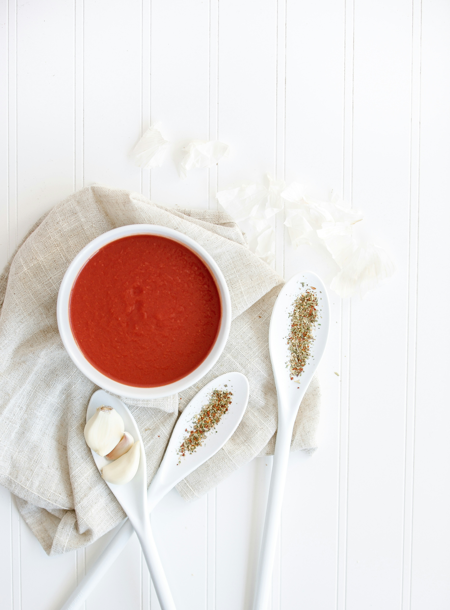
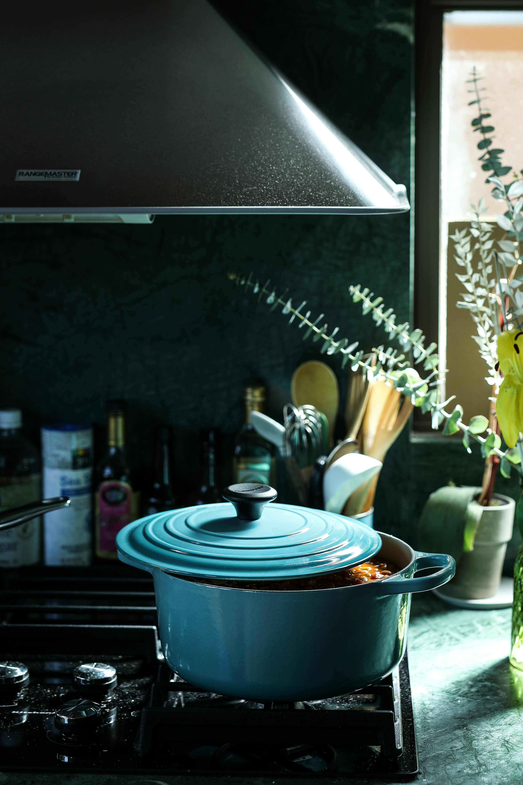
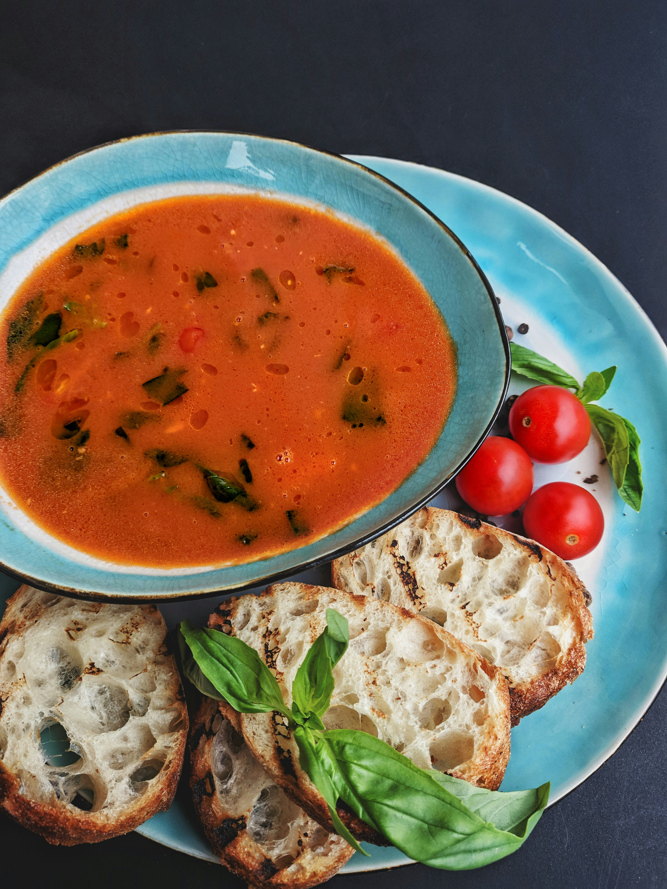

Sopa de Tomate

La sopa de tomate es un plato reconfortante ideal para días fríos. Su sabor rico y cremoso proviene de tomates frescos o en conserva, combinados con especias simples.

Para prepararla, sofríe cebolla y ajo, añade tomates triturados, caldo de verduras y un toque de crema. Cocina a fuego lento y tritura hasta obtener una textura suave.

Sírvela con crutones o una rebanada de pan tostado. Es una receta fácil de personalizar: prueba añadir albahaca fresca o un poco de queso rallado para un giro especial.

Aquí puedes ver el resumen de la preparación